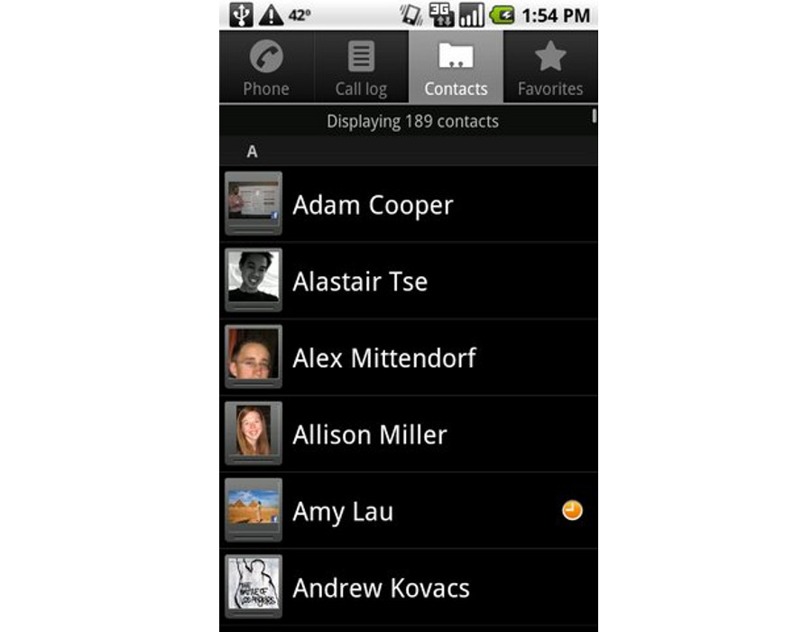
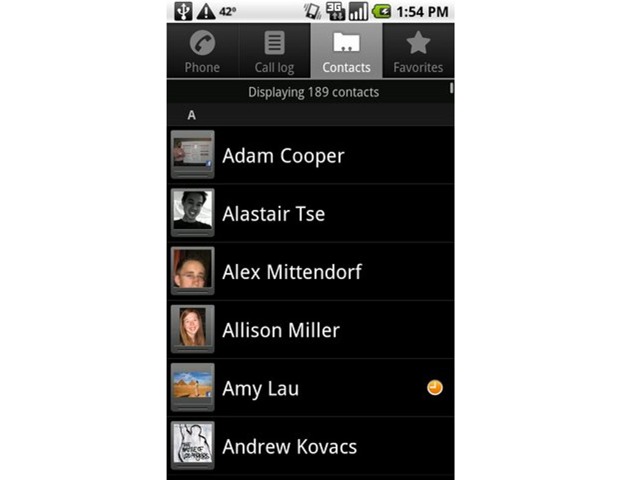
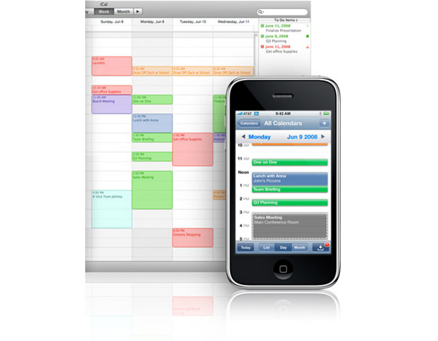
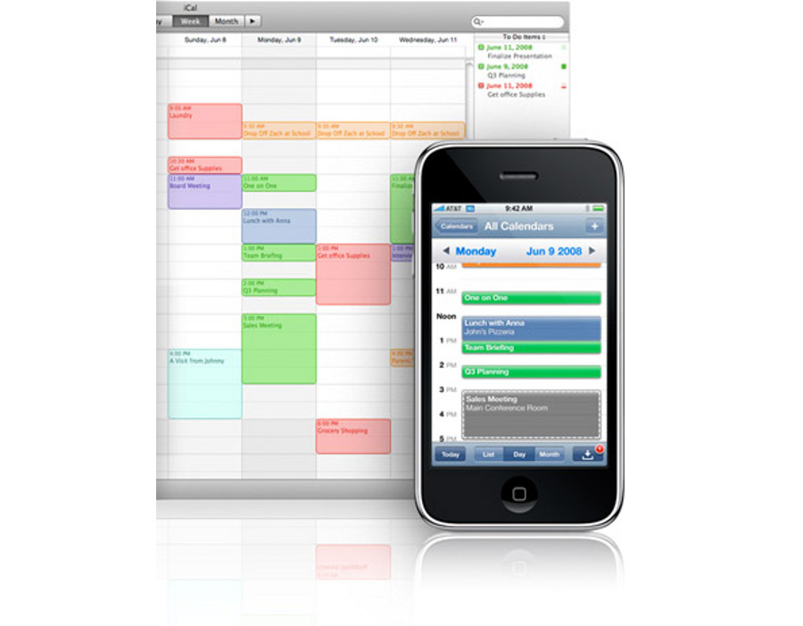

Gestión eficaz del tiempo en el trabajo
Intro
Lo que vamos a ver estas 5 horas
Apreta la tecla → para avanzar.


La parte teórica de este curso vista hace 2 semanas nos mostró la manera de gestionar nuestro tiempo profesional o personal de manera más eficiente. Podemos resumir lo visto en:
Los avances tecnológicos de la última década han supuesto cambios importantes en la sociedad, tanto a nivel de comunicación como de uso de dispositivos.


Cambia de foto con las teclas: ↑ y ↓

El ultimo ingrediente de nuesta receta es el software, la parte intangible de los dispositivos electrónicos. La evolución de la web, la rapidez de las líneas de comunicaciones y el poder de las multinacionales han hecho florecer el concepto de Cloud Computing o la nube.

 


 

Cambia de foto con las teclas: ↑ y ↓